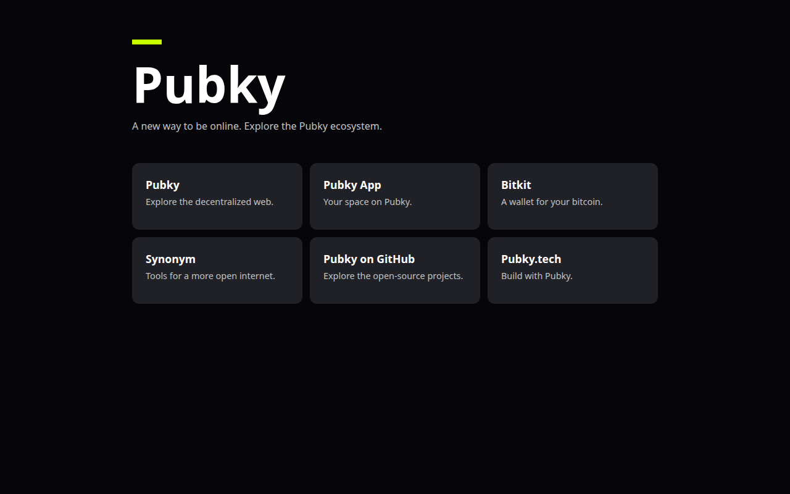

Browser for the free internet
Censorship resistant
domains.
Pubky Chromium adds public-key navigation and raw-public-key TLS to Chromium.
Not notarized yet. After the first launch warning, open it from Settings > Privacy & Security.
version=156.0.8073.4
wget "https://github.com/MCarlomagno/pubky-chromium/releases/download/pubky-linux-${version}/pubky-chromium_${version}-1_amd64.deb"
wget "https://github.com/MCarlomagno/pubky-chromium/releases/download/pubky-linux-${version}/SHA256SUMS.txt"
sha256sum -c SHA256SUMS.txt --ignore-missing
sudo apt install "./pubky-chromium_${version}-1_amd64.deb"Ubuntu App Center shows a generic “Unknown publisher” warning for any local .deb; terminal install avoids it.
